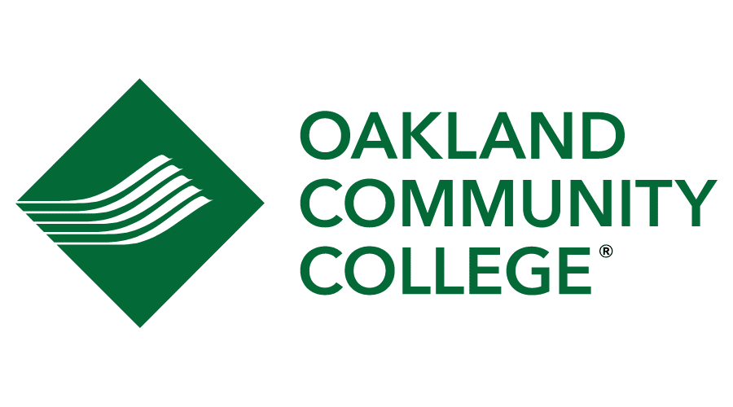

I've taken many classes for computer scinece in the last three years
but the very first ones were taken at my origonal high school south
lyon high. The first class I took was called visual basics one, it
was a python class but I had no Idea what that was at the time.
The class started off nothting like programming for the first three
weeks we just solved puzzles and learned about charts and I didn't
really see how it realated to programming but I always liked solving
problems so I liked the class. After we started learning python not
only did the puzzle solving and charts start to make sense but I also
learned that computer programming was what I wanted to do for life.

After I realized what I wanted to do I started looking for more Classes
I could take to further my knowlege of computer programming however
there were no more classes for me to take at south lyon so I looked
somewhere else. There was a program called oakland schools technical
campus or OSTC. OSTC was basically a long elective where I could learn
just computer programming for half of ever school day. My first language
that I learned a lot about was java and I really liked it. I found OSTC
to be a little to easy for so I looked for a more difficult program where
I could take more computer programming classes and less normal Classes.
Thats when I found the early college program where I didnt have to go
to south lyon anymore and I could just go to OSTC and for the rest of
my day I could enroll in Oakland Community College and that is what Im
doing now.